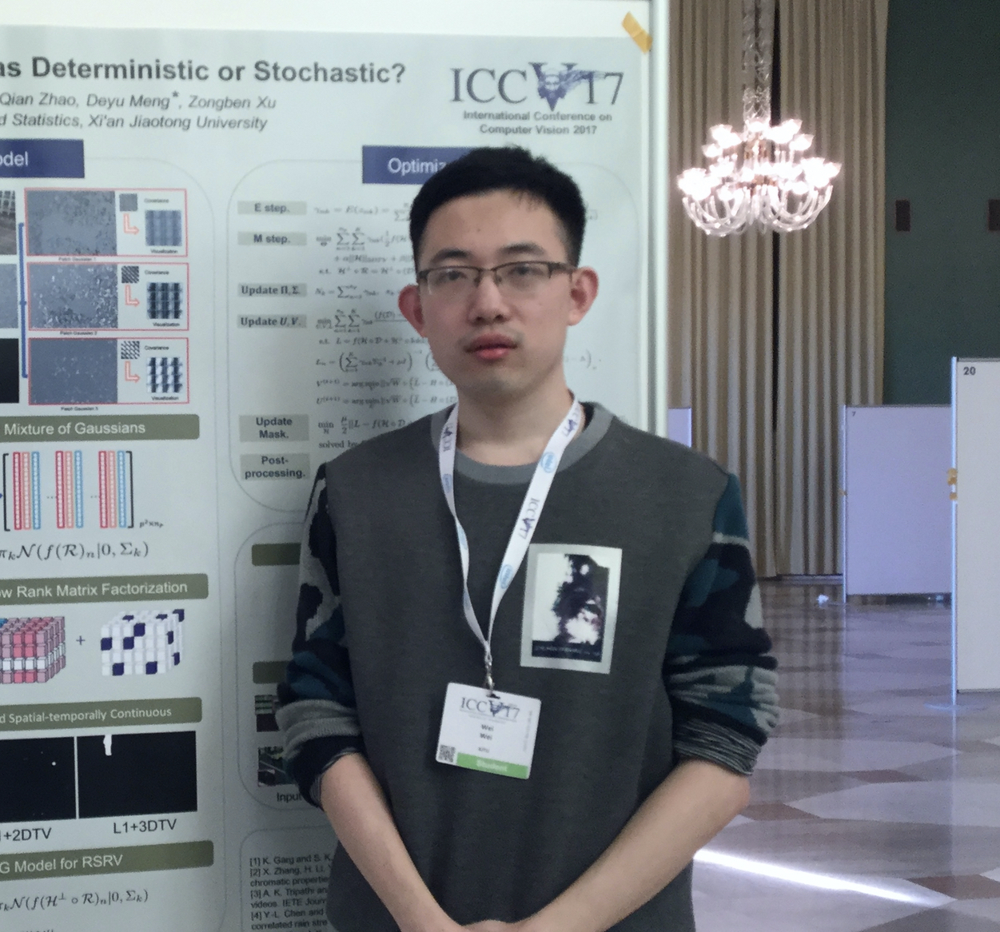
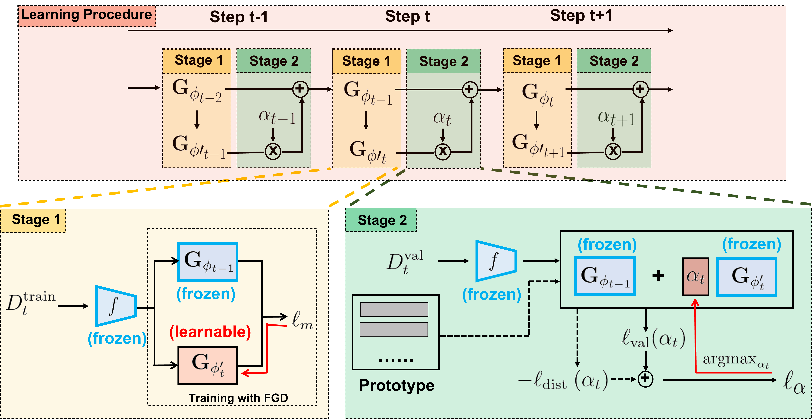
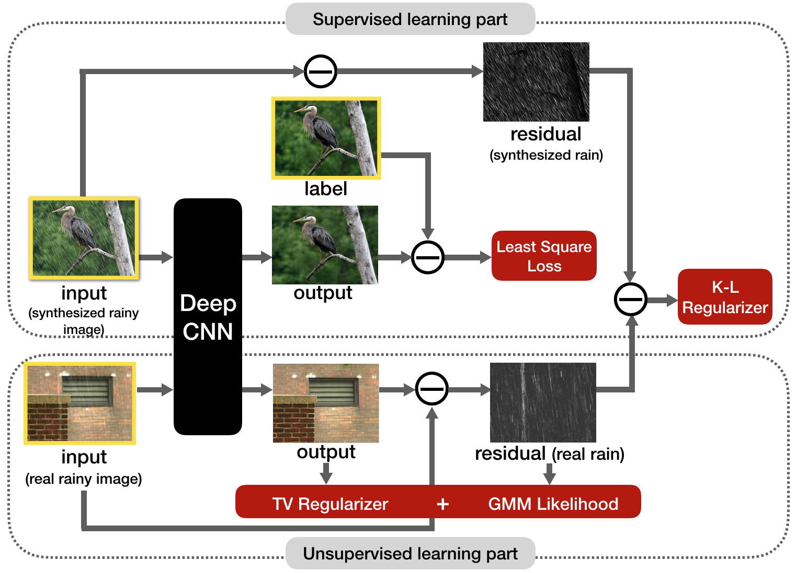

Wei Wei
Address
: 2145 Sheridan Road, Evanston, IL
Email
: wwzjer@u.northwestern.edu
About Me ([
CV
] [
Google Scholar
] [
GitHub
] [
LinkedIn
])
Currently, I am a final year PhD student in
Department of Electrical and Computer Engineering
,
Northwestern University
, advised by
Prof. Ying Wu
. Before joining Northwestern, I received my B.S degree in Mathematics Elite Class, M.S degree in Statistics, both from
Xi'an Jiaotong University
, advised by
Prof. Zongben Xu
and
Prof. Deyu Meng
.
I have broad research interests in the areas of computer vision and machine learning, including:
Adversarial robustness (current).
Few-shot learning and meta learning.
2D/3D human pose estimation.
Low-level vision, image/video restoration.
Selected Publications

Balancing between Forgetting and Acquisition in Incremental Subpopulation Learning
Mingfu Liang, Jiahuan Zhou,
Wei Wei
, Ying Wu
ECCV 2022
[
paper
] [
supplementary
] [
code
] [
project page
]

Semi-supervised Transfer Learning for Image Rain Removal
Wei Wei
, Deyu Meng, Qian Zhao, Zongben Xu1, Ying Wu
CVPR 2019
[
paper
] [
code
] [
poster
]
Semi-supervised Transfer Learning for Image Rain Removal
Wei Wei
, Lixuan Yi, Qi Xie, Qian Zhao, Deyu Meng, Zongben Xu
CVPR 2019
[
paper
] [
] [
code
] [
poster
]
Academic Services
Conference reviewer
IEEE Conference on Computer Vision and Pattern Recognition (CVPR), 2019,2020,2021,2022,2023
IEEE International Conference on Computer Vision (ICCV), 2019,2021
European Conference on Computer Vision (ECCV), 2020,2022
International Conference on Learning Representations (ICLR), 2021,2022,2023
Neural Information Processing Systems (NeuIPS), 2021,2022
International Conference on Machine Learning (ICML), 2022
Association for the Advancement of Artificial Intelligence (AAAI), 2020
IEEE International Conference on Multimedia and Expo (ICME), 2020
IEEE Winter Conference on Applications of Computer Vision (WACV), 2021,2022
Asian Conference on Computer Vision (ACCV), 2020
Journal reviewer
IEEE Access
IEEE Signal Processing Letters (SPL)
Teaching Experience
Northwestern University
ECE-332: Introduction to Computer Vision
, Teaching Assistant (Fall 2022)
Xi’an Jiaotong University
Advanced Mathematical Statistics, Teaching Assistant (Fall 2016)